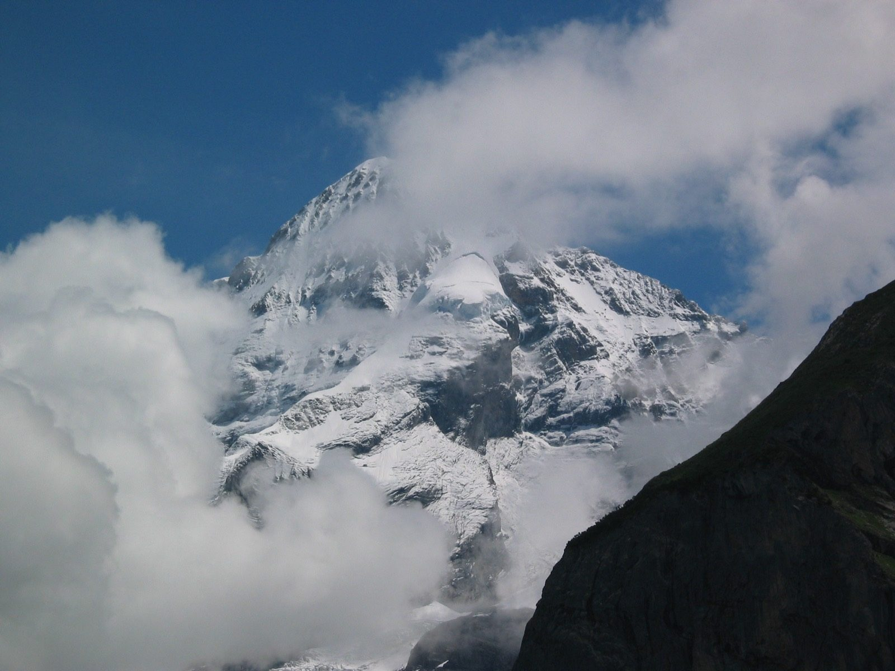

Kapitel 3 – Tegnelærer i Sankt Gallen
De næste seks år ernærer Nolde sig som tegnelærer i Sankt Gallen. Her udvikler han en passion for alpenaturen, bestiger de højeste bjerge i Schweiz, bl.a. Jungfrau, og forbliver selv jomfru. Den første kommercielle kunstneriske succes får Nolde med en serie postkort.